Seguretat física
Seguretat informàtica
Tots entenem que un sistema informàtic es considera segur si es troba lliure de tot risc o dany. Seguretat informàtica: Es la implantació d’un conjunt de mesures tècniques que determinen que els accessos als recursos d’un sistema informàtic siguin duts a terme exclusivament pels elements autoritzats a fer-ho. Com es imposible garantir la seguretat d’un sistema informàtic, és preferible fer servir el terme fiabilitat . Direm que un sistema informàtic és fiable quan se satisfan les tres propietats següetns:
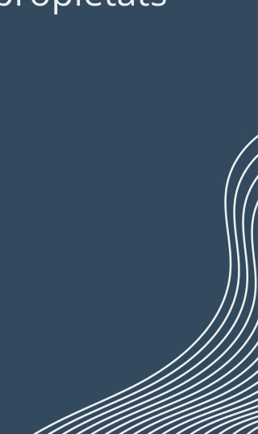
Confidencialitat
Integritat Disponibilitat
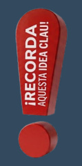
Per recursos del sistema no s’entén solament la informació, sinó qualsevol recurs en general: impressores, processador, etc.
Seguretat informàtica En general, cal entendre que la seguretat total no és possible i que les polítiques de gestió sempre són un compromís entre el nivell de seguretat que una empresa pot o vol assumir i el cost econòmic que això implica.
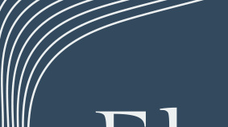
Elements Vulnerables
Quins són els elements del sistema que ens cal protegir? A grans trets, és fàcil adonar-se que qualsevol component d’un sistema informàtic ha de pertànyer a un dels grups següents: Maquinari Programari Dades
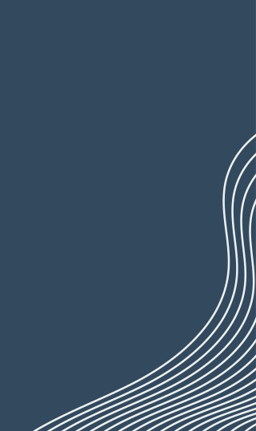
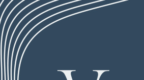
Vulnerabilitat vs Amenaces
Que es una vulnerabilitat qualsevol punt feble intern que pugui posar en perill la seguretat d’un sistema informàtic. Que es una amenaça son les que exploten les vulnerabilitats i, per tant, poder ser considerades com a exteriors al sistema.
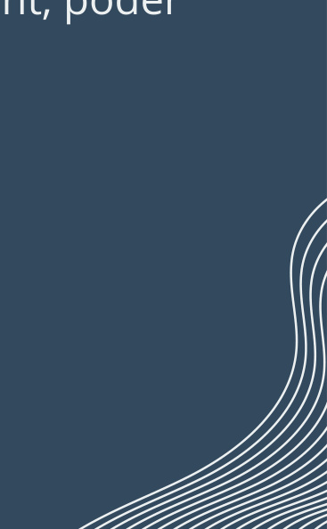
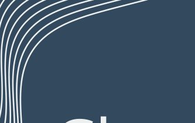
Classificacio de les Vulnerabilitats Origen físic: Accés físic a les instal·lacions que contenen el sistema informàtic. Origen natural: Inundacions, Incendis, Terratrèmols.... Origen en el maquinari: Mal funcionament dels elements físics del sistema. Origen en el programari: Es basen en errors de programació o de disseny tant de sistemes operatius com de programes. Origen en la xarxa: intercepció de la informació circulant, l’accés no autoritzat a un sistema informàtic Factor humà: És el punt més feble i més incontrolable de tots
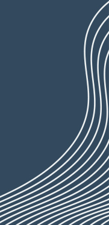
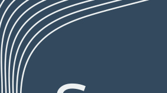
Seguretat física i ambiental Una estació de treball pot ésser fàcilment reemplaçable i pot no allotjar programari o dades gaire rellevants. No obstant això, podria esdevenir una porta d’entrada a tot el sistema informàtic. En aquest cas, doncs, convé que els accessos físics a l’estació només puguin ésser duts a terme pel personal autoritzat.
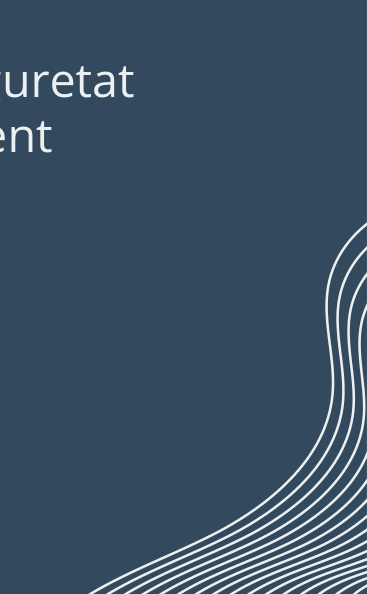
Un Centre de Processament de Dades CPD és una instal·lació d'alta seguretat dissenyada per allotjar servidors sota condicions ambientals estrictament controlades (temperatura, humitat i protecció electromagnètica).
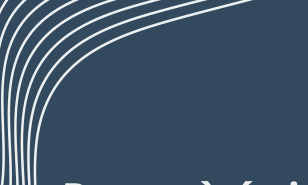
SAI
Per què és indispensable per als servidors? Un tall de llum sense apagada correcta pot provocar:
Pèrdua de dades a la memòria cau (cache).
Corrupció de fitxers oberts i bases de dades. Errors greus en el reinici del sistema.
Funció principal
Garanteix un subministrament elèctric temporitzat per permetre un apagament segur i operat de l'equip.
Característiques i Factors Claus Potència (Watts): Determina quants servidors es poden connectar simultàniament. Autonomia (Durada de la bateria): Temps disponible per mantenir el sistema encès abans de l'apagada. Manteniment (Vida útil): Cal reemplaçar les bateries segons les especificacions del fabricant per garantir-ne el funcionament. Comunicació i Apagada Automàtica (USB/Sèrie):
- Envia alertes de l'estat de la bateria al servidor. Executa l'aturada segura i ordenada de l'equip de forma automàtica. Permet la reiniciació automàtica del servidor quan torna el corrent.

Protecció física dels sistemes informàtics
Mesures Preventives de Protecció
Accés restringit: Ubicar servidors i equips centrals en zones protegides. Separació d'emmagatzematge: Guardar els dispositius de dades separats del maquinari general. Protecció del cablatge: Aïllar la xarxa contra danys físics i espionatge. Seguretat de la xarxa: Protegir el maquinari (encaminadors, connectors, mòdems) i triar una topologia adequada. Control i vigilància: Realitzar inventaris periòdics i instal·lar videovigilància (complint la normativa).
Mecanismes d’Autenticació d’Usuaris
Control d'accés: Combina la seguretat física (personal, detectors) amb la identificació digital. Varietat de mètodes: Des de sistemes senzills (usuari i contrasenya) fins a avançats/biomètrics (analitzador de retina).
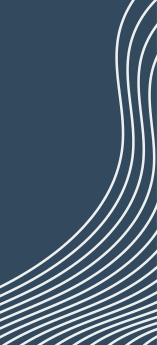
- Adaptabilitat: La tria depèn del pressupost i del nivell de seguretat necessari; es poden combinar diferents mètodes simultàniament.

Mecanismes d’autenticació d’usuaris Sistemes basats en elements coneguts per l’usuari
La Vulnerabilitat de les Contrasenyes
Mètode habitual i econòmic: És el mètode d'autenticació més utilitzat, però també el més vulnerable. Riscos principals: Filtració per descavells humans i possibilitat de desxifratat (ex: atacs de diccionari). Recomanacions i Bones Pràctiques Creació segura:
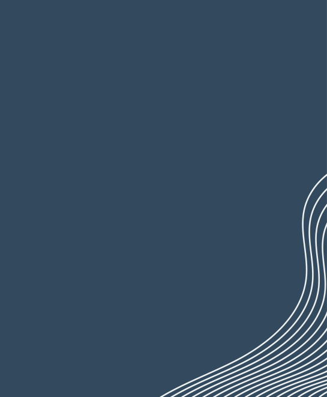
-
Longitud mínima de 12 caràcters. Incloure caràcters especials (!, *, ?), lletres i números.
-
Què cal evitar:
-
Seqüències òbvies (qwerty, 1234) i paraules de diccionari. Dades personals (DNI, nom, data de naixement, telèfon). Reutilitzar contrasenyes o usar la mateixa en comptes diferents.
-
Hàbits de gestió: Memoritzar-la (mai escriure-la en notes o post-its al monitor). Canviar-la periòdicament (ex: mensualment). No compartir-la mai per correu, SMS o telèfon. Exemple de contrasenya segura 3:9:Xu)v5H@5

Mecanismes d’autenticació d’usuaris
Sistemes basats en elements que té l’usuari
En aquest cas, l’autenticació no es fa d’acord amb el que un usuari recorda o coneix, sinó a partir d’un dispositiu que porta al damunt (el qual també pot requerir la introducció d’una contrasenya o d’un PIN), o bé a partir de les pròpies característiques físiques de l’usuari (sistemes biomètrics).
-
Sistemes basats en targetes intel·ligents i testimonis (tokens) de seguretat.
-
Les targetes intel·ligents poden ser el teu DNI per exemple
-
Els Tokens es un dispositiu físic compacte (tipus clauer o pendrive) utilitzat com a mecanisme d'autenticació. Per exemple el clauer que portem els profes per fitxar.
-
Sistemes biomètrics:
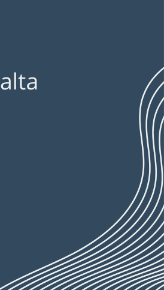
- Basats en l'usuari: Utilitzen característiques físiques o de comportament úniques per identificar-lo. Avantatge principal: No cal memoritzar contrasenyes ni portar targetes o tokens. Cost i ús: Solen ser més cars, però tecnologies com el reconeixement dactilar ofereixen alta fiabilitat a un preu accessible.
Seguretat lògica
Fa referència a totes aquelles mesures tècniques i administratives, i, per tant, de caire intern, que pots adoptar amb l’objectiu de mantenir la fiabilitat del sistema informàtic. Criptografia i funcions hash Un criptosistema és un mètode secret d’escriptura que permet la transformació d’un text en clar en un text xifrat o criptograma. Aquest procés de transformació s’anomena xifratge, i el procés invers, és a dir, la transformació del text xifrat en text en clar, desxifratge. Tant el xifratge com el desxifratge són controlats per una o més claus criptogràfiques
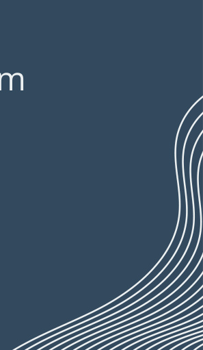

Criptosistemes de clau privada o simètrics
Els criptosistemes de clau privada o compartida (o simètrics) són aquells en els quals emissor i receptor comparteixen una única clau. És a dir, el receptor podrà desxifrar el missatge rebut només si coneix la clau amb la qual l’emissor ha xifrat el missatge.
-
🔒 L'Evolució de la Criptografia Simètrica
-
Passat (Obsolets):
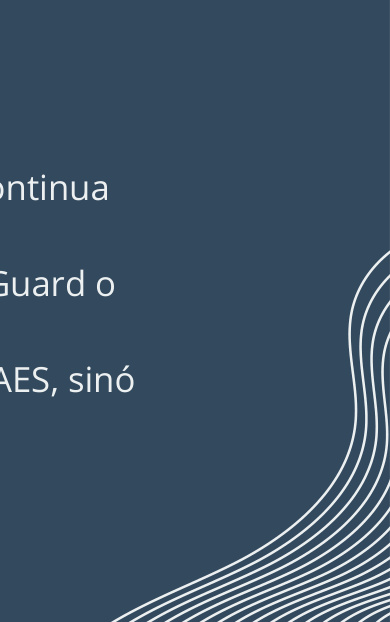
- DES (1977) i Triple DES: Deixats d'utilitzar per manca de seguretat. Blowfish / IDEA: Superats per tenir blocs de dades massa petits.
-
Present (Estàndard Actual):
- AES (Advanced Encryption Standard): És l'estàndard global vigent. La versió AES-256 continua sent 100% segura i resistent fins i tot a la computació quàntica. ChaCha20: Alternativa moderna (2008) molt utilitzada en mòbils i protocols com WireGuard o TLS 1.3.
-
💡 El futur: Els nous algorismes (ML-KEM i ML-DSA) s'estan desenvolupant no per substituir l'AES, sinó per protegir la criptografia de clau pública contra els futurs ordinadors quàntics.
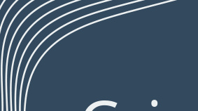
Criptosistemes de clau pública
Els criptosistemes de clau pública (o asimètrics) són un tipus de criptosistemes en què cada usuari té associada una parella de claus
L'analogia de la bústia i el candau
Imagina que cada persona té una bústia de correu al carrer amb un candau especial: La Clau Pública (Pu) : És com el candau obert. Tothom pot agafar una còpia d'aquest candau (perquè està en un directori públic). Si algú et vol enviar un missatge secret, fica la carta a la bústia i la tanca amb el teu candau. Com que el candau ja està tancat, ningú al carrer pot obrir la bústia per llegir la carta. La Clau Privada (Su) : És la clau física que tanca i obre aquest candau. Només tu tens aquesta clau a la teva meitat de la bústia. Per tant, només tu pots obrir el candau per llegir el missatge.

Criptosistemes de clau pública
Els elements clau explicats al detall
-
Parella de claus
-
Clau Pública (Pu - Public) : Es comparteix obertament amb tothom. S'utilitza per xifrar (tancar) els missatges que et volen enviar a tu.
-
Clau Privada (Su - Secret) : És un secret absolut que mai s'ha de compartir. S'utilitza per desxifrar (obrir) els missatges que t'han enviat utilitzant la teva clau pública.
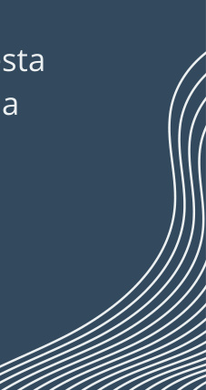
Un avantatge molt important del criptosistema de clau pública és que permet la incorporació d’una signatura digital . Cada usuari podrà signar digitalment el seu missatge amb la seva clau privada i aquesta signatura podrà ser verificada més tard, de manera que l’usuari que l’ha originat no pugui negar que s’ha produït ( propietat de no-repudi ).